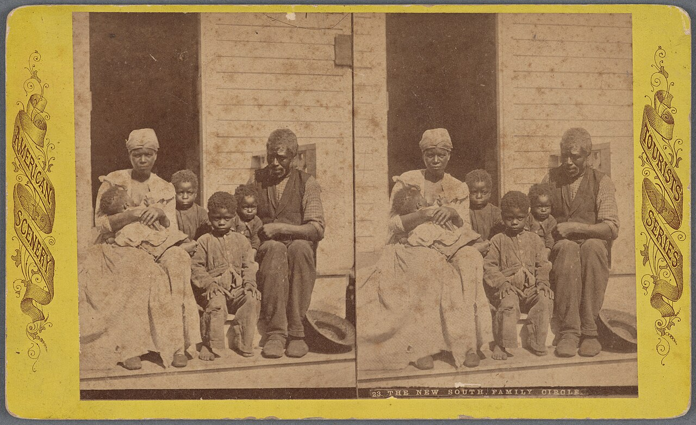
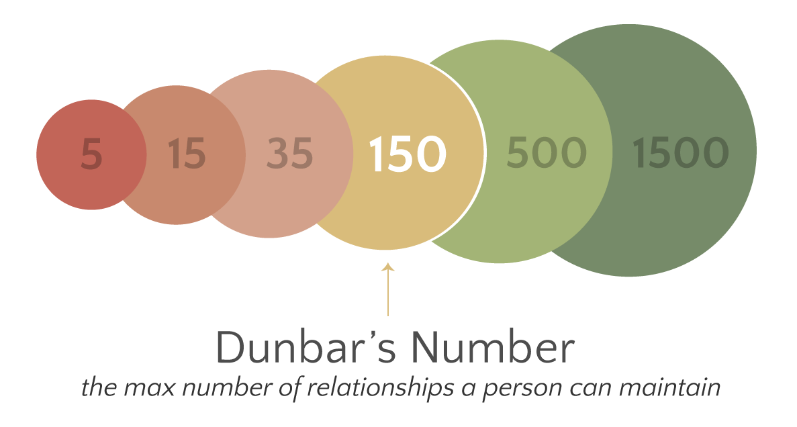
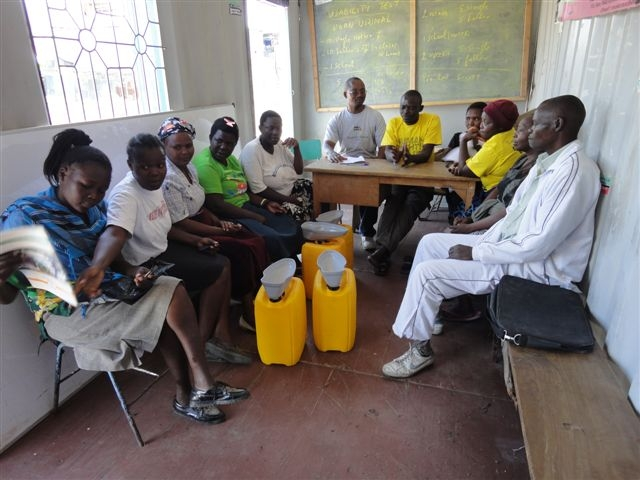

Groups & Organizations
You are never just an individual. From the family that raised you to the company that pays you, from the friend group that knows your secrets to the motor-vehicle office that knows your license number, your life runs through groups — and the larger, more deliberate ones we call organizations. Sociology asks a set of stubborn questions about them: why does a group of two feel so different from a group of three? Why will ordinary, decent people go along with a group they know is wrong, or obey an authority they privately doubt? And why does so much of modern life — work, school, government, even lunch — feel like it runs on the same impersonal, rule-bound machinery? This chapter builds the vocabulary to answer all three.
By the end of this chapter you can
- Distinguish a social group from an aggregate and a category.
- Contrast primary and secondary groups, and explain in-groups, out-groups, and reference groups.
- Explain how group size changes group life, using Simmel's dyad and triad.
- Describe instrumental versus expressive leadership and the three classic leadership styles.
- Summarize what the Asch and Milgram experiments revealed about conformity and obedience.
- Classify formal organizations as utilitarian, normative, or coercive (Etzioni).
- Lay out Weber's ideal bureaucracy and connect it to rationalization and Ritzer's McDonaldization.
- Apply the three sociological paradigms to groups and organizations.
Section 1Types of groups

What makes a group a group
Sociologists are fussy about the word group, because in everyday speech we use it for things that are not groups at all. A social group is two or more people who identify with one another and interact on some regular basis — a family, a study team, a book club, a shift of coworkers. What matters is the shared sense of belonging and the ongoing interaction, not the number of bodies.
Contrast that with two look-alikes. An aggregate is a set of people who happen to be in the same place at the same time but share no lasting connection — strangers waiting for the same bus, a crowd at a stoplight. A category is a set of people who share a trait but need never meet or interact — all left-handed people, all twenty-year-olds, everyone earning minimum wage. Aggregates and categories can become groups (the bus riders start a neighborhood carpool; the minimum-wage workers unionize), but until identification and interaction appear, they are only potential groups.
Primary and secondary groups
The most important distinction among groups comes from Charles Horton Cooley, who coined the term primary group in 1909. A primary group is small, long-lasting, and emotionally intense; its members relate to one another as whole people and value the relationship for its own sake. Family and close friends are the textbook cases. Cooley called these groups “primary” because they come first in our lives and are the nursery of the self — it is inside them that we first learn who we are, an idea that connects directly to his looking-glass self.
A secondary group is the opposite in almost every respect: larger, more impersonal, often temporary, and organized around a shared goal rather than shared feeling. Your classmates this term, the other customers in a checkout line, the committee planning an event — these are secondary groups. Members are means to an end, valued for what they do (the role they fill) rather than who they are. The two types are ideal endpoints, not sealed boxes: a secondary group can warm into a primary one, as when coworkers become lifelong friends, and a primary group can chill into a secondary one, as when relatives drift into people you see only at holidays.
| Feature | Primary group | Secondary group |
|---|---|---|
| Size | Small | Often large |
| Relationships | Personal, whole-person, enduring | Impersonal, role-based, often temporary |
| Orientation | Expressive — the bond is the point | Instrumental — a goal is the point |
| Emotional tone | Warm, intimate | Cool, businesslike |
| Examples | Family, close friends | Coworkers, classmates, a committee |
In-groups, out-groups, and reference groups
Groups do not just include — they exclude, and the excluding is sociologically loaded. William Graham Sumner, in Folkways (1906), named the in-group (the “us” we belong to and feel loyalty toward) and the out-group (the “them” we feel apart from, or against). The boundary between them tends to produce ethnocentrism — judging other groups by the standards of your own and finding them wanting. In-group/out-group thinking is the quiet engine behind school cliques, sports rivalries, hazing, and, at its ugliest, prejudice and discrimination.
A reference group is different again: it is any group we use as a standard to measure and judge ourselves, whether or not we belong to it. A teenager dressing like the popular crowd, a resident physician modeling herself on the attending she admires, a family “keeping up with the Joneses” — all are using reference groups. Robert K. Merton developed reference-group theory and paired it with anticipatory socialization: rehearsing the attitudes and behaviors of a group you hope to join before you actually join it. Reference groups explain why we can feel poor in a rich neighborhood and rich in a poor one; satisfaction depends less on what we have than on whom we compare ourselves to.
- A social group requires identification and interaction; an aggregate (shared place) and a category (shared trait) are not yet groups.
- Primary groups (Cooley) are small, intimate, and expressive; secondary groups are large, impersonal, and instrumental.
- In-groups/out-groups (Sumner) fuel loyalty and ethnocentrism; reference groups (Merton) are the yardsticks we judge ourselves against.
Section 2Group size and leadership

Why two is not just one more than one
The German sociologist Georg Simmel made a startling observation: the single most important thing about a group may simply be how many people are in it. He began with the smallest possible group, the dyad — a group of two. A dyad is uniquely intimate: with only one other person, each member gets the other's full attention, and there is nowhere to hide and no one to hide behind. But that intimacy comes at a price. A dyad is also the most unstable group there is, because it depends entirely on both members. If either one walks away, the group does not shrink — it vanishes. Marriages, best-friendships, and business partnerships all carry this built-in fragility.
Add a third person and the group's whole character changes — this is the triad. A triad is far more stable, because if two members quarrel the third can mediate and hold things together. But the third person also introduces politics that a dyad simply cannot have: two members can form a coalition against the one (two-against-one), and a clever third can play the other two off against each other to gain from their conflict, a move Simmel called tertius gaudens, “the third who enjoys.” A secret shared between two people is fundamentally different once a third knows it. This is why “let's keep this between us” means something so specific.
The trade-off of growing larger
Simmel's insight generalizes. As a group grows, it gains stability and diversity of skills and viewpoints, but it loses intimacy: the number of possible relationships explodes far faster than the number of members, so no one can maintain a close bond with everyone. Beyond a certain size, groups survive only by becoming formal — adopting rules, titles, and procedures to do the coordinating that personal ties once did. Anthropologist Robin Dunbar put a rough number on the ceiling of genuinely personal relationships a human can juggle — around 150, “Dunbar's number” — which is one reason organizations larger than a village need paperwork instead of memory.
Leadership: task and heart, and three styles
Every group develops leadership, and sociologists distinguish two kinds by their function. An instrumental leader focuses on the group's goal — setting tasks, keeping score, driving toward the finish. An expressive leader focuses on the group's emotional life — easing tension, boosting morale, keeping members together. The same person can do both, but the roles often split, which is why a team may have a hard-driving captain and a beloved peacemaker.
Leaders also differ in style. The psychologist Kurt Lewin and his colleagues, studying groups of boys in the 1930s, identified three that sociologists still use. An authoritarian (autocratic) leader gives orders and makes decisions alone; a democratic leader guides the group toward decisions it makes together; a laissez-faire leader stands back and lets the group run itself. None is best for all situations — the point is the fit between style and circumstance.
| Style | How decisions are made | Works best when | Typical downside |
|---|---|---|---|
| Authoritarian | Leader decides and directs | Speed and clarity are urgent (a crisis, a fire) | Resentment; low creativity and buy-in |
| Democratic | Group decides with the leader's guidance | Buy-in and good ideas matter more than speed | Slower; can stall without a decision |
| Laissez-faire | Leader steps back; members self-direct | Members are skilled, motivated experts | Drift and confusion if the group lacks focus |
- A dyad (two) is the most intimate and the most fragile group; a triad (three) is more stable but invites coalitions and mediation (Simmel).
- Growing larger buys stability and diversity but costs intimacy and forces formalization.
- Leaders are instrumental (task) or expressive (morale); the three styles are authoritarian, democratic, and laissez-faire (Lewin).
Section 3Conformity and obedience

Asch: bending to the group
Conformity is changing your behavior or opinion to match a group's. In the early 1950s the psychologist Solomon Asch ran an experiment now famous across the social sciences. He seated a single real subject among several confederates and asked the group a laughably easy question: which of three lines matches a reference line in length? Alone, people answered correctly almost every time. But when the confederates all confidently gave the same wrong answer out loud first, about a third of subjects' responses conformed to the obvious error, and roughly three-quarters of subjects went along with the group at least once. Pressed afterward, many said they knew the group was wrong but could not bear to be the lone dissenter.
Asch's result is unsettling because the task was unambiguous. This was not a hard judgment call; the subjects could see the truth with their own eyes and still yielded. The experiment also revealed the antidote: add even a single confederate who breaks with the majority, and conformity collapses. One visible ally makes it far easier to stand your ground — a finding with obvious force for whistleblowers, juries, and anyone who has ever been the only one in the room to object.
Milgram: obeying the authority
If Asch showed how we bend to peers, Stanley Milgram showed how we bend to authority, and his findings are more disturbing still. At Yale in the early 1960s, Milgram told volunteers they were in a “learning” study. Playing the role of “teacher,” each subject was instructed by a lab-coated experimenter to deliver escalating electric shocks to a “learner” (an actor, unharmed) whenever he answered wrong — up to a switch marked 450 volts and “XXX.” The learner cried out, begged to stop, and eventually fell silent. When subjects hesitated, the experimenter simply said, calmly, “The experiment requires that you continue.” Roughly 65 percent obeyed all the way to the maximum shock.
The volunteers were not monsters; they sweated, protested, and pleaded to stop — and most kept flipping switches anyway. Milgram argued that under legitimate authority people can enter an agentic state, seeing themselves as mere instruments of someone else's will and handing off responsibility for the outcome. His experiments — ethically controversial precisely because they were so revealing — became the touchstone for how ordinary people carry out cruelty inside hierarchies, and part of why modern research now requires strict ethical review. A related danger appears when a tight group prizes agreement over accuracy: Irving Janis called it groupthink, and it explains how smart, well-meaning teams talk themselves into disastrous decisions no member would have made alone.
| Asch (1951) | Milgram (1961–63) | |
|---|---|---|
| Pressure from | Peers (an equal group) | Authority (an expert in charge) |
| The task | Match a line to its equal — obviously easy | Shock a “learner” on command |
| Key finding | ~1/3 of answers conformed to a clear error | ~65% obeyed to the maximum “450 volts” |
| What breaks it | One ally who dissents | Weaker or absent authority; a defiant peer |
| Lesson | We conform to belong | We obey to defer |
- Asch showed strong conformity to peers even on an obviously correct task; a single dissenting ally breaks the spell.
- Milgram showed high obedience to authority — about 65% delivered the maximum shock — via an “agentic state” that offloads responsibility.
- Behavior is powerfully shaped by the situation; groupthink (Janis) is the group-level cousin of these pressures.
Section 4Formal organizations
From group to organization
When a secondary group grows large and is deliberately built to pursue specific goals, it becomes a formal organization: a large, secondary group organized to achieve its aims efficiently, with explicit rules, roles, and usually a chain of command. Corporations, universities, hospitals, armies, churches, and government agencies are all formal organizations. They are one of the defining features of modern life — a few centuries ago most people lived and died inside primary groups, whereas today we are born in an organization (the hospital), schooled in one, employed by one, and buried by one.
Etzioni's three types: why we join
The sociologist Amitai Etzioni classified formal organizations by the simplest sociological question you can ask: why do members participate, and how does the organization secure their compliance? His answer produced three types. A utilitarian organization pays you — you join for a material reward, chiefly money. Businesses and corporations are utilitarian; so, arguably, is the college you attend for the credential. A normative organization (also called voluntary) draws you with a shared cause or moral purpose rather than a paycheck — a charity, a church, a political party, a volunteer fire company, a professional association. People join to pursue goals they find worthwhile. A coercive organization holds members against their will as a form of punishment or treatment — prisons and some psychiatric hospitals. Membership is involuntary, and control is maintained by force.
The same person can belong to all three at once — utilitarian at work, normative at a place of worship, and, in an unlucky life, coercive in a jail. And an organization can shift type: a normative volunteer group that begins paying its organizers takes on a utilitarian character. The typology matters because it predicts so much else — how tightly members are watched, how much loyalty they feel, how they resist, and how the organization is likely to change.
| Type | Why members join | Basis of control | Examples |
|---|---|---|---|
| Utilitarian | Material reward (pay, credential) | Remunerative — money | Corporations, businesses |
| Normative | Shared goal or moral cause | Normative — values, belonging | Charities, churches, parties, clubs |
| Coercive | Involuntary — held for punishment or treatment | Coercive — force | Prisons, some psychiatric hospitals |
Coercive organizations often function as what Erving Goffman called total institutions — places that cut members off from the outside world and take charge of every part of their lives under a single authority. Goffman argued that such settings deliberately strip away the old self (uniforms replace clothes, numbers replace names, schedules replace choices) and rebuild it, a brutal form of resocialization. The same machinery appears, more gently, in boot camps and some monasteries.
Three lenses on organizations
The discipline's three great paradigms each read organizations differently, and each catches something the others miss.
| Paradigm | How it sees formal organizations |
|---|---|
| Structural functionalism | Rational tools that coordinate specialized roles to meet society's needs; bureaucracy efficiently delivers goods, services, and order — though it can develop dysfunctions like red tape (Merton). |
| Conflict theory | Machinery that concentrates power and wealth in a few hands; organizations discipline workers and citizens, and even democratic ones drift toward rule by elites — Michels' iron law of oligarchy, echoed in Mills' “power elite.” |
| Symbolic interactionism | Lived through everyday interaction and informal culture; real behavior follows unwritten norms and face-to-face relationships as much as the official org chart. |
- A formal organization is a large secondary group deliberately built to pursue goals efficiently.
- Etzioni's three types — utilitarian (pay), normative (cause), coercive (force) — sort organizations by why members comply.
- Coercive settings are often total institutions (Goffman) that resocialize by stripping and rebuilding the self.
- Functionalism sees coordination, conflict theory sees power (Michels, Mills), interactionism sees informal culture.
Section 5Bureaucracy and McDonaldization
Weber's ideal bureaucracy
The characteristic organizational form of the modern world is the bureaucracy — a large formal organization run by clear rules and a rational hierarchy rather than by personal ties or tradition. Max Weber built an ideal type of it: not a compliment or a criticism, but a pure model listing the features a fully bureaucratic organization would have. He identified six. Weber saw bureaucracy resting on rational-legal authority — obedience to impersonal rules and offices, not to a beloved chief (charisma) or an inherited throne (tradition).
| Weber's feature | What it means |
|---|---|
| Division of labor | Work is split into specialized offices, each with defined duties |
| Hierarchy of offices | Positions are ranked, each supervised by the one above — a clear chain of command |
| Written rules | Explicit regulations govern conduct and decisions, so the organization runs the same way regardless of who staffs it |
| Impersonality | Rules apply to everyone alike; officials serve without fear or favor, treating people as cases, not friends |
| Technical competence | People are hired and promoted on qualifications and merit, not on family or connections |
| Formal records | Everything is documented in writing — the “files” that give the organization a memory |
Weber thought bureaucracy was, on its own terms, the most efficient way ever devised to organize large numbers of people — and that this was precisely the problem. He feared that rational efficiency would spread until it caged the human spirit in what he called an iron cage (the “shell as hard as steel”) of impersonal calculation, draining life of magic, meaning, and warmth. Later sociologists cataloged bureaucracy's failures: Robert Merton described bureaucratic ritualism, in which officials cling to rules so rigidly that following the rule replaces achieving the goal (“I'm sorry, that's our policy”). Robert Michels added the iron law of oligarchy — that any large organization, however democratic in principle, tends to concentrate real power in a small, self-perpetuating leadership. Red tape, inertia, and alienation are not accidents of bad management; they are bureaucracy's own shadow.
McDonaldization: Weber for the twenty-first century
The sociologist George Ritzer updated Weber for a fast-food age with a concept he named McDonaldization: the process by which the principles of the fast-food restaurant come to dominate more and more of society, from higher education to healthcare to dating apps. Ritzer argued that rationalization now runs on four dimensions, all visible under the golden arches and now nearly everywhere else.
| Dimension | What it means | Everyday example |
|---|---|---|
| Efficiency | The fastest route from need to fulfillment | Drive-thru; self-checkout; “one-click” buying |
| Calculability | Counting and measuring — quantity stands in for quality | “Billions served”; portion sizes; credit hours; star ratings |
| Predictability | The same product and experience everywhere, every time | A Big Mac tastes identical in Tokyo or Toledo |
| Control | People (workers and customers) managed by rules and nonhuman technology; skills are removed | Scripted service; automated fryers; timed tasks |
Ritzer's sharpest point is that these rational systems routinely produce irrational outcomes — the irrationality of rationality. The efficient drive-thru breeds long lines and unhealthy food; the predictable chain flattens local character; the tightly controlled job deskills and dehumanizes the worker who does it. This is Weber's iron cage in a paper wrapper: a world made maximally efficient, calculable, and predictable can become, at the same time, joyless and absurd. Recognizing McDonaldization is not a demand to reject every rational system — it is a way to notice what we trade away when convenience becomes the only value we count.
- Bureaucracy rests on Weber's six features — specialization, hierarchy, written rules, impersonality, merit, and records — and on rational-legal authority.
- Its shadow side includes the iron cage, Merton's ritualism, and Michels' iron law of oligarchy.
- Ritzer's McDonaldization extends rationalization through efficiency, calculability, predictability, and control — and warns of the irrationality of rationality.
The chapter in one breath
- A social group needs identification and interaction; an aggregate and a category are not yet groups.
- Primary groups (Cooley) are intimate and expressive; secondary groups are impersonal and instrumental; we also live among in-groups, out-groups, and reference groups (Sumner, Merton).
- Group size is destiny: Simmel's dyad is intimate but fragile, the triad more stable but political; bigger groups trade intimacy for stability and must formalize.
- Leaders are instrumental or expressive, and lead in authoritarian, democratic, or laissez-faire styles (Lewin).
- Asch exposed conformity to peers and Milgram obedience to authority — both proving the power of the situation over the individual.
- Formal organizations come in three types — utilitarian, normative, and coercive (Etzioni) — and coercive ones often act as total institutions (Goffman).
- Weber's bureaucracy is efficient but risks the iron cage; Ritzer's McDonaldization spreads that rationalization across modern life, dysfunctions and all.
ReferenceWords worth knowing
A quick reference for the terms in this chapter — skim it now, or circle back whenever a word trips you up.
- Aggregate
- People who share a physical space but have no lasting interaction or sense of belonging, e.g., strangers at a bus stop.
- Anticipatory socialization
- Rehearsing the attitudes and behaviors of a group you hope to join before you actually belong to it (Merton).
- Bureaucracy
- A large formal organization run by rational rules and a hierarchy of offices rather than by personal ties or tradition.
- Category
- People who share a trait (age, income, handedness) but need never meet or interact.
- Coercive organization
- A formal organization whose members are held involuntarily for punishment or treatment, e.g., prisons (Etzioni).
- Conformity
- Adjusting one's behavior or opinion to align with a group's, even against one's own judgment.
- Dyad
- A group of two — the most intimate group and the most unstable, since either member's exit dissolves it (Simmel).
- Ethnocentrism
- Judging other groups by the standards of one's own in-group and finding them inferior.
- Formal organization
- A large secondary group deliberately organized to pursue specific goals efficiently.
- In-group / out-group
- The group one belongs to and feels loyal toward (“us”) versus a group one feels apart from (“them”) (Sumner).
- Instrumental / expressive leadership
- Leadership focused on the group's task and results (instrumental) versus its emotional life, morale, and cohesion (expressive).
- Iron law of oligarchy
- Michels' claim that all large organizations, however democratic, tend toward rule by a small elite.
- McDonaldization
- Ritzer's term for the spread of fast-food principles — efficiency, calculability, predictability, control — across society.
- Normative organization
- A voluntary organization people join to pursue a shared goal or moral cause, e.g., a charity or church (Etzioni).
- Obedience
- Complying with the direct commands of an authority figure, as in Milgram's experiments.
- Primary group
- A small, enduring, emotionally intimate group valued for its own sake, e.g., family and close friends (Cooley).
- Rationalization
- Weber's term for the historical shift toward organizing life by efficiency, calculation, and impersonal rules.
- Reference group
- A group used as a standard for evaluating oneself, whether or not one belongs to it (Merton).
- Secondary group
- A large, impersonal, goal-oriented group whose members relate through roles, e.g., coworkers and classmates.
- Total institution
- A setting that isolates members and controls all of life under one authority, resocializing them, e.g., a prison (Goffman).
- Triad
- A group of three — more stable than a dyad, but open to coalitions and mediation by a third party (Simmel).
- Utilitarian organization
- A formal organization people join for a material reward such as pay, e.g., a business (Etzioni).